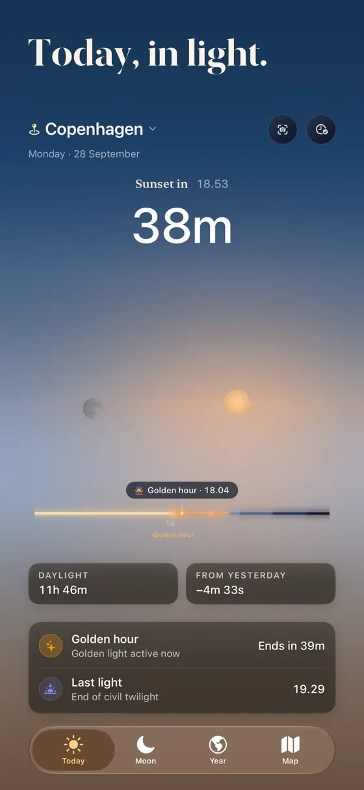
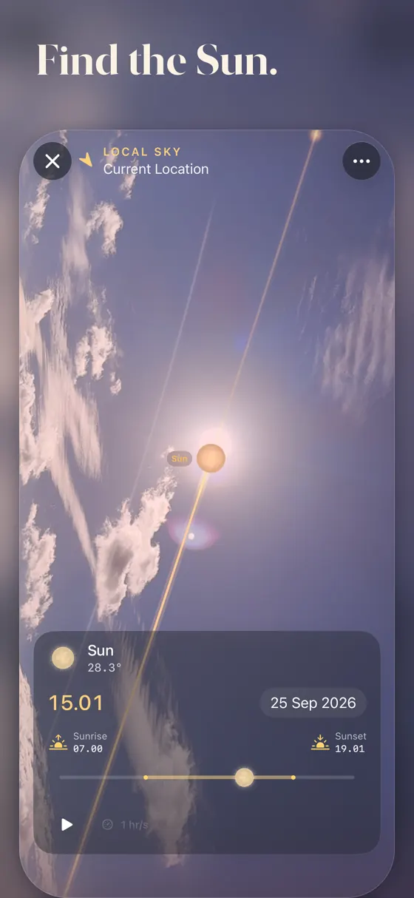
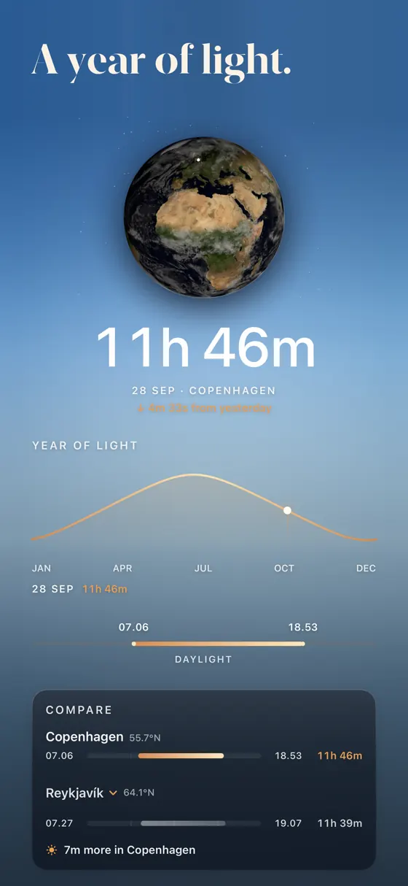
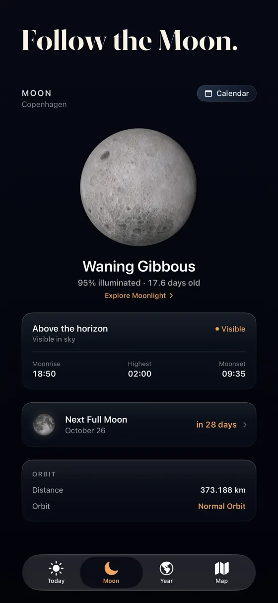

What it does
The whole day’s light, in one glance.
Sunrise & sunset
Solar noon, twilight, and golden and blue hour, morning and evening.
Moon phases
The phase tonight, with moonrise and moonset times.
Earthlight
The moving day/night boundary across the planet, and the year of light for a place you care about.
Sky AR
Point the camera at the sky to find the Sun and Moon.
Widgets & Live Activities
The current light on your Home Screen and Lock Screen, plus alternate icons.
Watch & TV companions
The same places on your wrist and on the television.
The screens
Four screens, one day.



Solis tells you what the sky is doing today: sunrise and sunset, the golden hours photographers plan around, twilight, and the Moon — its phase, rise and set. Open it, get the answer, put the phone away.
Built to stay out of the way
No account, no ads, no tracking, and no server of its own. If you grant location permission it is used on your device to calculate times where you are; you can also pick a place by hand and never share a location at all. Settings and your purchase follow you across your devices through Apple's own mechanisms.
Price
Solis is a free download with a seven-day trial of the complete app from first launch. After that, Solis Full is a single lifetime purchase ($4.99) with Family Sharing — no subscription. Restore Purchases is on the unlock screen. Apple handles billing and refunds.
Need help with Solis?
Location, Sky AR, widgets and restoring Solis Full are answered on the support page.